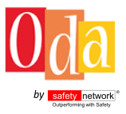

Red hot safety topics
SafetyNetwork® and the DigitalFactory: episode 2

The Design Sprint is a 5-day process for answering critical business questions through design, prototyping, and testing with customers. It is mastered by our experts to elaborate cost effective, simple and motivational digital applications for the industry.
SafetyNetwork®: Distinctive – Attentive – Dedicated.
April 2018: SafetyNetwork® goes global for the aluminum industry
SafetyNetwork has been selected by a leader in cast aluminum braking parts for the global automotive industry & producer of cast components for aeronautic markets to audit its Safety Management System.
SafetyNetwork®: Distinctive – Attentive – Dedicated.
SafetyNetwork® and the DigitalFactory: episode 1
SafetyNetwork has set up a partnership with an expert service provider in digital web platforms in order to provide cost effective, simple and motivational safety digital applications.
SafetyNetwork®: Distinctive – Attentive – Dedicated.
SafetyNetwork® for the petrochemical industry
SafetyNetwork has been selected by an international provider of technologies, products and services to the refining, petrochemical, gas and alternative fuels markets to deliver “Safety Encounter” training including “NUDGE” methodologies.
SafetyNetwork®: Distinctive – Attentive – Dedicated.
SafetyNetwork® coaches future Safety Leaders

SafetyNetwork has been selected by a world leader in cement, aggregates, concrete and waste management solutions to deliver exclusive and customized training to develop Safety Leadership coaches.
SafetyNetwork®: Distinctive – Attentive – Dedicated.
12 years of Inspirational Safety Leadership for SafetyNetwork®
The whole team wishes you a warm welcome to 2018, full of opportunities that have never been!
And because change is fully part of our DNA, why not ask us how our “NUDGE” workshop introduces positive reinforcement and indirect suggestions to achieve non-forced compliance to influence the motives, incentives & decision making of groups and individuals?
SafetyNetwork®: Distinctive – Attentive – Dedicated.
Thanks to our amazing clients!
90% of our new business results from recommendations by existing clients.
SafetyNetwork®: Distinctive – Attentive – Dedicated.
Sunny winter for SafetyNetwork®
SafetyNetwork is delivering “Leadership Safety” training and Safety Cultural services in Mauritius for a leader of the modern sugarcane industry with primary activities consisting in the cultivation of sugarcane, the production of refined sugar, bioethanol, thermal energy and electricity.
SafetyNetwork®: Distinctive – Attentive – Dedicated.
SafetyNetwork® in Algeria
SafetyNetwork has been selected by the first private family-run Algerian Group (and first agro-industrial group in Africa) with businesses englobing activities in food-processing, mass distribution, electronics and domestic appliances, iron and steel, flat glass, industrial construction, automotive, services and media, in order to provide Leadership & Safety Cultural services.
SafetyNetwork®: Distinctive – Attentive – Dedicated.
SafetyNetwork® in Morocco
SafetyNetwork is delivering “Safety Encounter” training in Morocco for one of the world's two leading aircraft engine nacelle producers.
SafetyNetwork®: Distinctive – Attentive – Dedicated.
Full thrust for SafetyNetwork®
Our “Safety Encounter” change management approach has been selected for the 4th year in a row by a high-technology Group with a leading position in design, development, production and support of engines for commercial and military aircraft and satellites.
SafetyNetwork®: Distinctive – Attentive – Dedicated.
intelliSafe by SafetyNetwork®
It’s a mindset… intelliSafe methodology combines Leadership, Communication, Human & Organizational skill factors to move from “wait and see behaviors” to “accountable behaviors” where each member of your team acknowledges reality, owns it, identifies solutions and make it happen!
SafetyNetwork®: Distinctive – Attentive – Dedicated.
SafetyNetwork® in the Benelux region
SafetyNetwork has been selected by a world leader in cement, aggregates, concrete and waste management solutions to deliver innovative Safety Leadership workshops around Agility, Collaboration & Empowerment for operational staff.
SafetyNetwork®: Distinctive – Attentive – Dedicated.
SafetyNetwork® & the Aerospace Industry
SafetyNetwork is delivering “Safety Encounter” training in Europe and Africa for one of the world's two leading aircraft engine nacelle producers.
SafetyNetwork®: Distinctive – Attentive – Dedicated.
“Hola Seguridad” from Mexico for SafetyNetwork®
SafetyNetwork is delivering Safety leadership services & “ODA” learning processes and tools in Mexico for the worldwide leader in aluminium braking systems.
SafetyNetwork®: Distinctive – Attentive – Dedicated.
SafetyNetwork®
SafetyNetwork has been selected by an international provider of advanced technologies, catalysts, adsorbents and services, with a global reputation for basic engineering design excellence to deliver Leadership Safety workshops for Executives.
SafetyNetwork®: Distinctive – Attentive – Dedicated.
SafetyNetwork®
SafetyNetwork has been selected by a global, diversified and Fortune 500 company leader in building materials to deliver Leadership Safety workshops for Executives.
SafetyNetwork®: Distinctive – Attentive – Dedicated.
Take care of your body, it's the only place in which you have to live!
We wish you all a year of opportunities and a time of harmony.
SafetyNetwork® is proudly starting its 11th year of inspirational Leadership based on our core values: humility, tenacity and agility!
SafetyNetwork®: Distinctive – Attentive – Dedicated.
SafetyNetwork® in Mauritius & La Réunion
SafetyNetwork delivers Behavior Based Safety services in Mauritius and La Réunion island for an independent energy producer developing and operating projects in thermal biomass, anaerobic digestion and solar power.
SafetyNetwork®: Distinctive – Attentive – Dedicated.
World-Class Safety Performance & SafetyNetwork®
SafetyNetwork is piloting a bottom-up safety awareness and empowerment project in Switzerland engaging operating teams in reducing risks and in addressing safety issues as they arise. The project introduces various soft skill tools to help teams manage and challenge behaviors.
SafetyNetwork®: Distinctive – Attentive – Dedicated.
“Forza Italia” for SafetyNetwork®
SafetyNetwork® is delivering Field Safety Observation & Dialogue training for a leading industrial engineering Group designing, manufacturing and installing complete units for the production of welded tubes and/or profiles for 30 years.
SafetyNetwork®: Distinctive – Attentive – Dedicated.
Worldwide tour for SafetyNetwork®
SafetyNetwork has been selected by the worldwide leader for aluminium braking systems to provide Safety Leadership services in Hungary, Serbia, France, Mexico and China.
SafetyNetwork®: Distinctive – Attentive – Dedicated.
High flying for SafetyNetwork®
SafetyNetwork has been selected by one of the world's two leading aircraft engine nacelle producers for all types of aircraft (regional jets, business jets, mainline commercial jets over 100 seats) to provide Leadership & Safety Culture services.
SafetyNetwork®: Distinctive – Attentive – Dedicated.
Sunny summer for SafetyNetwork®
Once again, SafetyNetwork has been selected by an independent energy producer developing and operating projects in the three fast-growing sectors of thermal biomass, anaerobic digestion and solar power to deliver Leadership Safety consulting services.
Smooth sailing for SafetyNetwork®
Once again, SafetyNetwork® has been selected by an international shipbuilding group with a world leading position in the construction of cruise ships, ferries, offshore and other specialized vessels to provide innovative Leadership Safety consulting services.
SafetyNetwork®: Distinctive – Attentive – Dedicated.
SafetyNetwork® "ODA": an innovative, integrated & customized safety solution to reach zero harm!
“ODA, Observe-Dialog-Act” learning process & tools combine training services, reporting & visual management tools (“ODAtabase” & “VisualODA”) as well as train-the-trainer services customized to fit all your cultural & leadership requirements.
SafetyNetwork®: Distinctive – Attentive – Dedicated.
SafetyNetwork® supporting the industrial engineering industry
SafetyNetwork® has been selected by a leading blue chip company to provide worldwide leadership consulting services. Our 10th contract with a global scale across 5 continents.
SafetyNetwork®: Europe – Middle East – Americas – Africa –Asia – Russia.
SafetyNetwork® supporting the industrial engineering industry
SafetyNetwork® is delivering Safety Encounter & Train The Trainer services in USA and Europe for a leading industrial engineering Group.
SafetyNetwork®: Distinctive – Attentive – Dedicated.
“Safety Encounters” in the Aerospace industry

SafetyNetwork’s change management approach “Safety Encounters” has been selected by a high-technology Group with a leading position in Aerospace, Defense and Security to strengthen its global Safety Culture & Leadership model.
SafetyNetwork®: Distinctive – Attentive – Dedicated.
SafetyNetwork® celebrating 10 years!

It all started during an event with the famous astronaut and inspirational leader Neil Armstrong on November 17th, 2005: the whole team decided to set-up a venture based on humility, tenacity and agility, the driving forces of SafetyNetwork® for more than a decade now!
We wish all our current and future clients a year of opportunities and time of harmony.
SafetyNetwork® and the high technology medical industry
SafetyNetwork has been selected by the world leader in medical compression garments to deliver Safety Encounter & Train-The-Trainer services.
SafetyNetwork® and the pharmaceutical industry

SafetyNetwork delivers Safety Encounters training focusing on Human Factor Reliability for a world leader in the discovery, development, manufacturing and marketing of pharmaceutical products for the treatment of iron deficiency.
SafetyNetwork® and the concrete industry

SafetyNetwork delivers Behavior Based Safety consulting services for one of the few full-service concrete producers.
SafetyNetwork's innovative solution to accelerate change in Safety Maturity
For a web based technological service company, SafetyNetwork is delivering Safety Cultural Surveys using interactive Management Learning techniques.
- Inspires and motivates people.
- Fun engagement of participants in real-time interaction.
- Live results for analysis and group discussions.
SafetyNetwork overseas
SafetyNetwork delivers Behavior Based Safety services in the Indian Ocean and French West Indies for an independent energy producer developing and operating projects in thermal biomass, anaerobic digestion and solar power.
SafetyNetwork delivers Safety Encounter Trainings (SET) in the Aerospace industry

SafetyNetwork delivers Behavior Based Safety training focusing on Human Factor for a high-technology Group with leading position in Aerospace, Defense and Security.
SafetyNetwork and the construction materials industry in Algeria
SafetyNetwork delivers Behavior Based Safety consulting services on Algerian sites to reinforce Leadership and safety culture for the worldwide leader in construction materials.
SafetyNetwork and the food industry

SafetyNetwork delivers Leadership Safety consulting services to reinforce Leadership and safety culture for the worldwide leader in manufacturing, marketing and distribution of spices, seasoning mixes, condiments and other flavorful products for the entire food industry..
SafetyNetwork and the aluminium industry in China
SafetyNetwork delivers Leadership Safety consulting services to reinforce Leadership and safety culture for a global group specialized in the manufacture of moulded aluminium safety components for cars.
SafetyNetwork and the industrial service industry

SafetyNetwork delivers Leadership Safety consulting services to strengthen safety culture and management for a leader in maintenance and related services for industry.
SafetyNetwork and the energy producer industry
SafetyNetwork delivers Leadership Safety consulting services to strengthen safety culture and management for an independent energy producer developing and operating projects in the three fast-growing sectors of thermal biomass, anaerobic digestion and solar power.
SafetyNetwork and the automotive equipment industry

SafetyNetwork delivers Leadership Safety consulting and training services until 2016 to strengthen safety culture for an automotive world leader in injection molding of technical parts.
SafetyNetwork and the high technology medical industry
SafetyNetwork delivers Leadership Safety consulting services to strengthen safety culture for the world leader in medical compression garments.
SafetyNetwork and the pharmaceutical industry
SafetyNetwork has been selected by a world leader in the discovery, development, manufacturing and marketing of pharmaceutical products for the treatment of iron deficiency to provide innovative Leadership Safety consulting services.
SafetyNetwork delivers services to the shipbuilding industry

SafetyNetwork has been selected by an international shipbuilding group with a world leading position in the production of cruise ships, ferries, offshore and other specialized vessels to provide innovative Leadership Safety consulting services.
SafetyNetwork delivers services to the oil and gas industry
SafetyNetwork is providing innovative methodologies and tools through its Leadership Safety consulting services to a world leading energy and chemical company.
SafetyNetwork reaffirms integrity as a business core value
SafetyNetwork's integrity and independence is our foundation, our trademark in a way! It is enabling us to grow at our own pace while providing us with the freedom to say and do as we see fit.
SafetyNetwork strengthens its position in the Sugar and Alcohol business
SafetyNetwork delivers Leadership Safety consulting services to strengthen safety culture for a European leader in sugar and alcohol manufacturing.
SafetyNetwork strengthens its position in the Aerospace industry
SafetyNetwork will deliver Behavior Based Safety consulting services and trainings until 2016 for a high-technology Group with leading position in Aerospace, Defense and Security.
SafetyNetwork selected by leading industrial engineering group

SafetyNetwork has been selected by a leading industrial engineering Group to deliver Safety Leadership seminars in USA, Europe and Asia.
SafetyNetwork strategic project for the Aerospace industry
SafetyNetwork has been selected by a high-technology Group with leadership position in Aerospace, Defense and security to deliver Safety Leadership and Behavior Based Safety consulting services.
SafetyNetwork and Safety Leadership for the Aerospace Industry
SafetyNetwork has been selected by a leading fully-integrated aeronautical group to design and deliver Safety Leadership training and consulting services until 2014.
SafetyNetwork in China

SafetyNetwork delivers services in China (Dalian).
SafetyNetwork in Press
Presse (décembre 2011) "SafetyNetwork: Fiabiliser le Facteur Humain" in la papeterie n°313, novembre-décembre 2011, page 26.
SafetyNetwork in Press
SafetyNetwork et l'industrie papetière : "La papeterie" édition n°298 (août-septembre 2009, page 7). "SafetyNetwork : la sécurité comportementale, levier essentiel de la performance opérationnelle". Available at groupenp.com